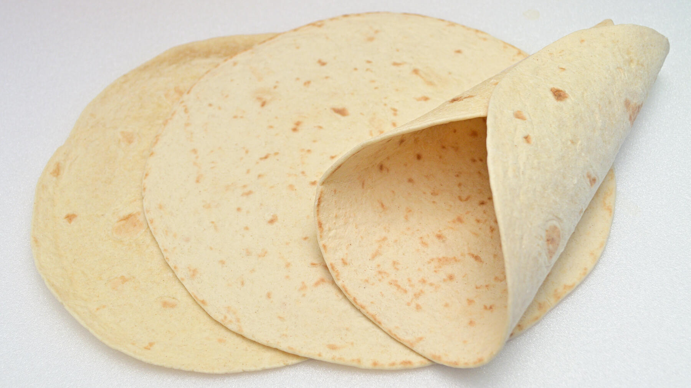

Zurück zur Übersicht
Einfache Weizentortillas
Weiche Fladen aus der trockenen Pfanne für Wraps, Burritos oder als Beilage. Eine Portion entspricht einer Tortilla.
- Zeit
- 50 Min.
- Schwierigkeit
- leicht
- Kategorie
- Teige & Grundrezepte
- Ernährung
- vegan
Zutaten
Portionen
- 380 gWeizenmehl
- 185 mlHandwarmes Wasser
- 1 TLSalz
- 1 ELÖl
- Gewürze nach Belieben
- Mehl für die Arbeitsfläche
Zubereitung
- Mehl, Salz, Öl und Gewürze in einer Schüssel mischen. Das Wasser langsam dazugeben und etwa 3 Minuten zu einem glatten Teig kneten. Etwa 30 Minuten ruhen lassen. In der Zeit kann man schon das Gemüse für die Wraps schneiden.
- Eine große beschichtete Pfanne ohne Öl auf mittlerer Hitze vorwärmen.
- Stücke von 90–95 g abschneiden, kurz durchkneten, zu Kugeln formen und flach drücken. Auf einer bemehlten Fläche mit dem Nudelholz rund auf etwa 2 mm ausrollen und zuletzt von Hand auf die gewünschte Größe ziehen.
- Die Fladen in der Pfanne bei mittlerer Hitze backen. Sobald sich auf der Unterseite braune Bläschen bilden, wenden, bis auch die zweite Seite Bläschen hat. Die Hitze stimmt, wenn ein Fladen etwa 1 Minute je Seite braucht. Ist sie zu niedrig, trocknen sie aus, ist sie zu hoch, verbrennen sie.
- Die fertigen Fladen auf einen Teller legen und mit einem Küchentuch abdecken, damit sie nicht austrocknen.
Tipp: Kräutersalz, Bohnenkraut oder gemahlener Kreuzkümmel passen gut in den Teig. Statt Weizenmehl geht auch Dinkel- oder Vollkornmehl, bei Vollkorn eventuell etwas mehr Wasser nehmen.